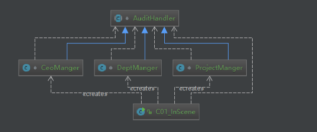
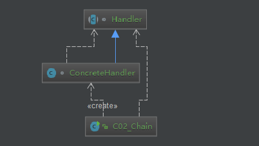

原文出处:本文由博客园博主知了一笑提供。
原文连接:https://www.cnblogs.com/cicada-smile/p/11716928.html
原文连接:https://www.cnblogs.com/cicada-smile/p/11716928.html
本文源码：GitHub·点这里 || GitEE·点这里
一、生活场景描述
1、请假审批流程
公司常见的请假审批流程：请假天数
当 day<=3 天,项目经理审批
当 3<day<=5 天,部门经理审批
当 day>5 天,CEO审批2、流程图解

3、代码实现
public class C01_InScene {
public static void main(String[] args) {
// 组装责任链
AuditHandler h1 = new CeoManger();
AuditHandler h2 = new DeptManger();
AuditHandler h3 = new ProjectManger();
h3.setSuccessor(h2);
h2.setSuccessor(h1);
/*
* 测试输出
* 项目经理无权审批
* 部门经理无权审批
* CEO审批：同意【Cicada】,请假【6】天
*/
h3.handleLeaveDay("Cicada",6);
}
}
abstract class AuditHandler {
//持有下一个处理请求的对象
protected AuditHandler successor = null;
public AuditHandler getSuccessor() {
return successor;
}
public void setSuccessor(AuditHandler successor) {
this.successor = successor;
}
public abstract void handleLeaveDay (String user,Integer day);
}
/**
* 项目经理审批
*/
class ProjectManger extends AuditHandler{
@Override
public void handleLeaveDay(String user, Integer day) {
if (day <= 3){
System.out.println("项目经理审批：同意【"+user+"】,请假【"+day+"】天");
} else {
System.out.println("项目经理无权审批");
if (getSuccessor() != null){
getSuccessor().handleLeaveDay(user,day);
}
}
}
}
/**
* 部门经理审批
*/
class DeptManger extends AuditHandler{
@Override
public void handleLeaveDay(String user, Integer day) {
if (day > 3 && day <= 5){
System.out.println("部门经理审批：同意【"+user+"】,请假【"+day+"】天");
} else {
System.out.println("部门经理无权审批");
if (getSuccessor() != null){
getSuccessor().handleLeaveDay(user,day);
}
}
}
}
/**
* CEO审批
*/
class CeoManger extends AuditHandler{
@Override
public void handleLeaveDay(String user, Integer day) {
if (day > 5){
System.out.println("CEO审批：同意【"+user+"】,请假【"+day+"】天");
} else {
if (getSuccessor() != null){
getSuccessor().handleLeaveDay(user,day);
}
}
}
}二、责任链模式
1、基础概念
责任链模式是一种对象的行为模式。在责任链模式里，很多对象由每一个对象对其下个的引用而连接起来形成一条链式结构。请求在这个链上传递，直到链上的某一个对象有权处理该请求。请求的客户端不知道链上的哪个对象处理该请求，这使得系统可以在不影响客户端的情况下动态地重新组织和分配责任对象。
2、核心角色
(1)、抽象处理者角色
定义处理请求的接口。接口可以也可以给出一个方法以设定和返回对下个对象引用。这个角色通常由一个Java抽象类或者Java接口实现。
(2)、具体处理者角色
具体处理者接到请求后，可以选择将请求处理掉，或者将请求传给下个对象。由于具体处理者持有对下家的引用。
3、模式图解

4、源代码实现
public class C02_Chain {
public static void main(String[] args) {
// 组装责任链
Handler handler1 = new ConcreteHandler();
Handler handler2 = new ConcreteHandler();
handler1.setHandler(handler2);
// 提交请求
handler1.handlerRequest();
}
}
/**
* 抽象处理者角色
*/
abstract class Handler {
/*
* 持有后续的责任对象
*/
protected Handler handler;
/**
* 处理请求的方法
*/
public abstract void handlerRequest();
public Handler getHandler() {
return handler;
}
public void setHandler(Handler handler) {
this.handler = handler;
}
}
/**
* 具体处理者角色
*/
class ConcreteHandler extends Handler{
/**
* 调用该方法处理请求
*/
@Override
public void handlerRequest() {
/*
* 判断是否有后续的责任对象,没有就出来请求,有就直接放过
*/
if(getHandler() != null){
System.out.println("放过请求,下个对象处理...");
getHandler().handlerRequest();
} else{
System.out.println("直接处理请求了...");
}
}
}三、Spring框架应用
1、DispatcherServlet类的
DispatcherServlet 核心方法 doDispatch。HandlerExecutionChain只是维护HandlerInterceptor的集合，可以向其中注册相应的拦截器，本身不直接处理请求，将请求分配给责任链上注册处理器执行，降低职责链本身与处理逻辑之间的耦合程度。
HandlerExecutionChain mappedHandler = null;
mappedHandler = this.getHandler(processedRequest);
mappedHandler.applyPreHandle(processedRequest, response);
mappedHandler.applyPostHandle(processedRequest, response, mv);2、HandlerExecutionChain类
这里分析的几个方法，都是从DispatcherServlet类的doDispatch方法中请求的。
- 获取拦截器，执行preHandle方法。
boolean applyPreHandle(HttpServletRequest request,
HttpServletResponse response) throws Exception {
HandlerInterceptor[] interceptors = this.getInterceptors();
if (!ObjectUtils.isEmpty(interceptors)) {
for(int i = 0; i < interceptors.length; this.interceptorIndex = i++) {
HandlerInterceptor interceptor = interceptors[i];
if (!interceptor.preHandle(request, response, this.handler)) {
this.triggerAfterCompletion(request, response, (Exception)null);
return false;
}
}
}
return true;
}- 在applyPreHandle方法中，执行triggerAfterCompletion方法。
void triggerAfterCompletion(HttpServletRequest request,
HttpServletResponse response, Exception ex) throws Exception {
HandlerInterceptor[] interceptors = this.getInterceptors();
if (!ObjectUtils.isEmpty(interceptors)) {
for(int i = this.interceptorIndex; i >= 0; --i) {
HandlerInterceptor interceptor = interceptors[i];
try {
interceptor.afterCompletion(request, response, this.handler, ex);
} catch (Throwable var8) {
logger.error("HandlerInterceptor.afterCompletion threw exception", var8);
}
}
}
}- 获取拦截器，执行applyPostHandle方法。
void applyPostHandle(HttpServletRequest request,
HttpServletResponse response, ModelAndView mv)
throws Exception {
HandlerInterceptor[] interceptors = this.getInterceptors();
if (!ObjectUtils.isEmpty(interceptors)) {
for(int i = interceptors.length - 1; i >= 0; --i) {
HandlerInterceptor interceptor = interceptors[i];
interceptor.postHandle(request, response, this.handler, mv);
}
}
}四、模式总结
- 将请求和处理逻辑分开，实现解耦提高系统的灵活性;
- 当责任链过长时，性能会下降，测试也会变得复杂;
- 应用场景：请假、加薪、费用等常见的审批流程;
五、源代码地址
GitHub·地址
https://github.com/cicadasmile/model-arithmetic-parent
GitEE·地址
https://gitee.com/cicadasmile/model-arithmetic-parent：责任链模式2.png)